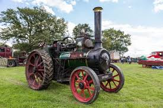
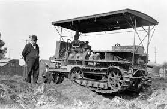

Os tratores a vapor revolucionaram a agricultura no século XIX e início do século XX, oferecendo uma alternativa poderosa e eficiente ao trabalho manual e ao uso de animais de tração.
Aplicações dos Tratores a Vapor na Agricultura
Os tratores a vapor foram utilizados para uma variedade de tarefas na agricultura da época:
- Aragem de Terras: Facilitavam a aragem de grandes áreas de cultivo, permitindo uma preparação mais rápida e eficaz do solo.
- Colheita: Ajudavam na colheita de culturas como trigo e milho, aumentando a produtividade.
- Transporte: Eram utilizados para transportar cargas pesadas de produtos agrícolas e outros materiais.
- Trabalho em Serras e Moinhos: Forneciam energia para serras, moinhos e outros equipamentos agrícolas.

Vantagens e Benefícios
O uso de tratores a vapor na agricultura proporcionou diversos benefícios na época:
- Maior Eficiência: Aumentavam significativamente a eficiência das operações agrícolas, permitindo o cultivo de áreas maiores com menos esforço.
- Redução da Mão de Obra: Reduziam a dependência de trabalho manual intensivo, aliviando o esforço físico dos trabalhadores.
- Aumento da Produção: Facilitavam a produção agrícola em maior escala, contribuindo para o crescimento econômico.
- Versatilidade: Podiam ser utilizados em diversas tarefas agrícolas, desde a preparação do solo até o transporte de mercadorias.
- Durabilidade: Eram máquinas robustas e duráveis, capazes de operar em condições adversas.

```